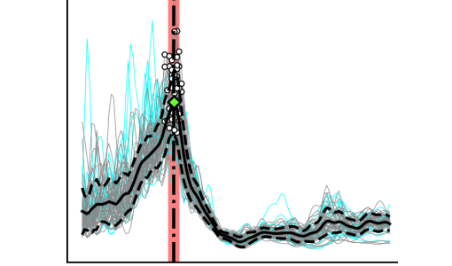

Understanding the Subsurface
The next time you step onto a grassy field consider that beneath your
feet is somewhere between a few centimeters to hundreds of meters of
soil (i.e., dirt), and beneath that are tens of kilometers of rock. Then
consider what do we know about how that soil and rock changes spatially
beneath the grassy field. The answer is we know very little.
So why don't we know more? The short answer is that "seeing"
into the earth requires specialized equipment and processing techniques,
which makes subsurface imaging (i.e., developing an image of what's
below the surface) cost prohibitive.
So what can we do? If it is the cost of "seeing" into the
earth that is preventing us from further exploration and learning, then
by making it easier we could unlock a whole new domain of exploration.
Subsurface imaging is not new, researchers and practitioners have been
interested in this topic for the past century or more, but we still have
not become sufficiently advanced to explore what's underneath the
surface of the earth as easily as we medical imaging understand the
human body. However, research innovation paired with advances in sensing
and computing ensure that these techniques will not continue
to remain beyond our grasp.
My research seeks to advance subsurface imaging
toward more robust and uncertainty-aware solutions through the
intersection of field experiments, numerical simulation, and
high-performance computing with applications in site characterization
and natural hazards.
Published Work
Mapping Depth to Bedrock, Shear Stiffness, and Fundamental Site Period at CentrePort, Wellington ... (Vantassel et al. 2018)
Wellington’s port (CentrePort) experienced significant damage from the Mw 7.8 Kaikōura earthquake. To
propose mitigation measures to prevent similar damage in future earthquakes, there was a need to quantify
the port's depth to bedrock, shear stiffness, and fundamental site period (T0). The characterization effort
included horizontal‐to‐vertical (H/V) spectral ratio (HVSR) measurements and active‐source and passive‐wavefield
surface‐wave measurements respectively.
Multi-reference-depth Site Response at the Garner Valley Downhole Array (Vantassel and Cox 2019)
Measured and predicted site response at the Garner Valley Downhole Array are compared using different reference depths/conditions.
Empirical transfer functions (ETFs) from small amplitude ground
motions are compared with 1D linear-viscoelastic theoretical transfer functions (TTFs) calculated using
shear wave velocity (Vs) profiles obtained from both invasive and non-invasive seismic testing.
Suites of non-invasive Vs profiles at the GVDA are shown to produce more accurate TTFs than those from
invasive Vs profiles for all reference depths/conditions.
Software

hvsrpy: An open-source Python package for H/V Processing (Vantassel 2020)
Collaborations

Limitations of the MASW for subsurface anomaly detection (Crocker et al. 2020)
Crocker, J. A., Vantassel, J. P., and Cox, B. R. (2020). “Limitations of the multichannel analysis of surface waves (MASW) method for
subsurface anomaly detection.” Proceedings of the 6th International Conference on Geotechnical and Geophysical Site Characterization,
Budapest, Hungary. (Accepted)
A Statistical Representation and Frequency-Domain Window-Rejection Algorithm for Single-Station HVSR Measurements (Cox et al. 2020)
Cox, B. R., Cheng, T., Vantassel, J. P., and Manuel, L. (2020). “A Statistical Representation and Frequency-Domain
Window-Rejection Algorithm for Single-Station HVSR Measurements.” Geophysical Journal International. (In Review)
Consulting
- Cox, B.R., Vantassel, J. P. (2019). "Deep Shear Wave Velocity Profiling Using MASW and MAM
Surface Wave Methods: Amarapura Urban Development Project (AUDP)" October 2019.
- Cox, B.R., Vantassel, J. P. (2019). "Shear Wave Velocity Profiling Using MASW and MAM
Surface Wave Methods: Wellington Girls' College in Wellington, New Zealand" May 2019.
- Cox, B.R., Vantassel, J. P. (2017). "Deep Shear Wave Velocity Profiling Using MASW and MAM
Surface Wave Methods: SCDOT Deep Borehole Sites near Andrews and Conway, South Carolina"
Geotechnical Engineering Report GR17-18, University of Texas at Austin, July 2017.
- Cox, B.R., Teague, D., Vantassel, J. P., Yust, M. (2017). “Deep Shear Wave Velocity Profiling Using MASW and
MAM Measurements: East Bay Municipal Utility District (EBMUD) Delta Tunnel
Project,” Geotechnical Engineering Report GR17-04, University of Texas at Austin,
January 2017.
Courses
An introduction to git and version control.
A non-traditional approach to Python 3.

Introduction to Bash and the Linux shell.